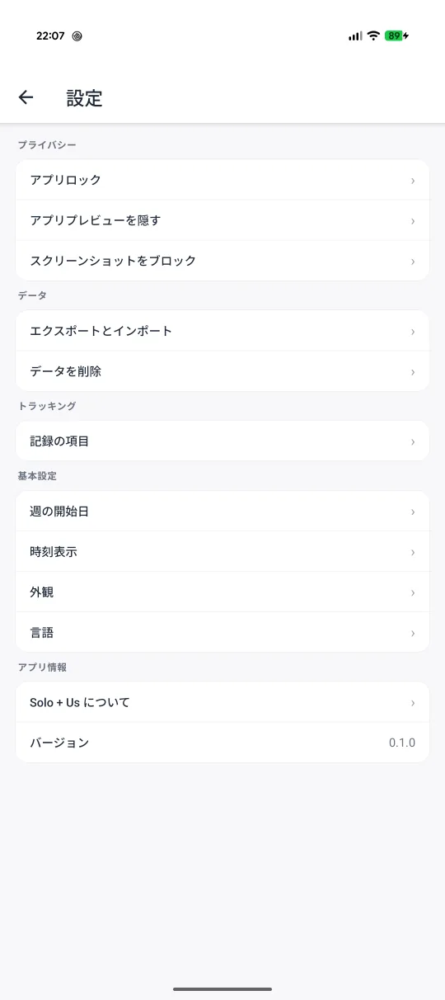

数秒で記録
ソロかパートナーとを1回タップするだけ。間違えてもその場で取り消せ、日時はあとから変更できます。
Solo + Us は、性行為と自慰行為を記録するアプリです。パートナーとの時間も、ひとりの時間も、自分だけの記録として残せます。記録は端末内の暗号化されたデータベースに保存されます。アカウント登録は不要で、サーバーとの同期もなく、広告もありません。
Google Playで無料。18歳以上の方が対象です。
ソロかパートナーとを選ぶだけで記録できます。間違えてもその場で取り消せます。詳細項目は任意で、記録のときに尋ねられません。日時はあとから変更できます。

ソロかパートナーとを1回タップするだけ。間違えてもその場で取り消せ、日時はあとから変更できます。
避妊、オーガズム、所要時間、前後の気分、自由記入のメモなどから選べます。すべて任意で、記録のときに尋ねられません。
今月の件数、カレンダーでの月表示、合計と記録の平均間隔を確認できます。
JSON で完全なバックアップを、CSV で分析用の書き出しができ、バックアップからの復元にも対応しています。
性行為の記録を、ほかの健康データと一緒にヘルスコネクトに保存できます。初期設定ではオフで、設定の「Health Connect と同期」から有効にできます。
保存されるのは日時と避妊具等の使用有無だけで、ソロとパートナーの区別は保存されません。ヘルスコネクトでこのデータの読み取りを許可した他のアプリは、これらの記録を読み取れます。
Solo + Us がヘルスコネクトから情報を読み取ることはありません。同期をオフにしたり、アンインストールしたりしても、ヘルスコネクトに保存済みの記録は残ります。削除する場合は、ヘルスコネクト側で操作してください。
記録は端末内の暗号化されたデータベースに保存されます。アカウント登録は不要で、サーバーとの同期もありません。
端末の指紋 / 顔 / パスコードによるアプリロック、アプリ履歴でのプレビュー非表示、スクリーンショットのブロック（任意）。
実際のアプリ画面です。



Google Playで無料ダウンロードできます。